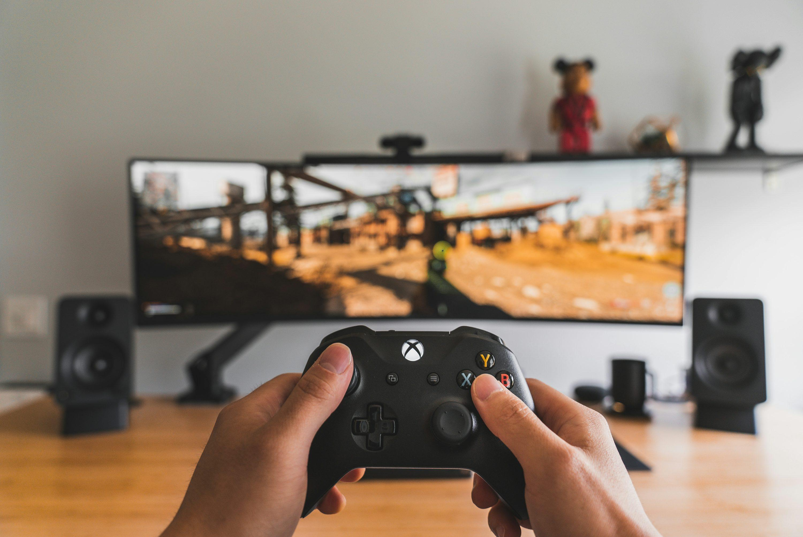

Videomängud on üks minu lemmikviise vaba aega veeta. Kõige rohkem meeldivad mulle mängud, kus saab ise ringi avastada ja midagi ehitada, aga vahel on tore ka sõpradega koos mängida.

| Mäng | Žanr | Aasta |
|---|---|---|
| Minecraft | Ellujäämine | 2011 |
| Subnautica | Ellujäämine | 2018 |